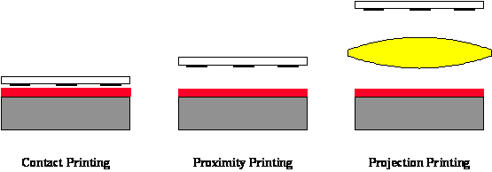

- Home |
- Blog |
- Lithography |
- Published Works |
- For Profit |
- About Chris
- | Gentleman
- | Scientist

The fabrication of an integrated circuit (IC) requires a variety of physical and chemical processes performed on a semiconductor (e.g., silicon) substrate. In general, the various processes used to make an IC fall into three categories: film deposition, patterning, and semiconductor doping. Films of both conductors (such as polysilicon, aluminum, and more recently copper) and insulators (various forms of silicon dioxide, silicon nitride, and others) are used to connect and isolate transistors and their components. Selective doping of various regions of silicon allow the conductivity of the silicon to be changed with the application of voltage. By creating structures of these various components millions of transistors can be built and wired together to form the complex circuitry of a modern microelectronic device. Fundamental to all of these processes is lithography, i.e., the formation of three-dimensional relief images on the substrate for subsequent transfer of the pattern to the substrate.
The word lithography comes from the Greek lithos, meaning stones, and graphia, meaning to write. It means quite literally writing on stones. In the case of semiconductor lithography (also called photolithography) our stones are silicon wafers and our patterns are written with a light sensitive polymer called a photoresist. To build the complex structures that make up a transistor and the many wires that connect the millions of transistors of a circuit, lithography and etch pattern transfer steps are repeated at least 10 times, but more typically are done 20 to 30 times to make one circuit. Each pattern being printed on the wafer is aligned to the previously formed patterns and slowly the conductors, insulators, and selectively doped regions are built up to form the final device.
The importance of lithography can be appreciated in two ways. First, due to the large number of lithography steps needed in IC manufacturing, lithography typically accounts for about 30 percent of the cost of manufacturing. Second, lithography tends to be the technical limiter for further advances in feature size reduction and thus transistor speed and silicon area. Obviously, one must carefully understand the trade-offs between cost and capability when developing a lithography process. Although lithography is certainly not the only technically important and challenging process in the IC manufacturing flow, historically, advances in lithography have gated advances in IC cost and performance.
Optical lithography is basically a photographic process by which a light sensitive polymer, called a photoresist, is exposed and developed to form three-dimensional relief images on the substrate. In general, the ideal photoresist image has the exact shape of the designed or intended pattern in the plane of the substrate, with vertical walls through the thickness of the resist. Thus, the final resist pattern is binary: parts of the substrate are covered with resist while other parts are completely uncovered. This binary pattern is needed for pattern transfer since the parts of the substrate covered with resist will be protected from etching, ion implantation, or other pattern transfer mechanism.
The general sequence of processing steps for a typical photolithography process is as follows: substrate preparation, photoresist spin coat, prebake, exposure, post-exposure bake, development, and postbake. A resist strip is the final operation in the lithographic process, after the resist pattern has been transferred into the underlying layer. This sequence is shown diagrammatically in Figure 1-1, and is generally performed on several tools linked together into a contiguous unit called a lithographic cluster. A brief discussion of each step is given below, pointing out some of the practical issues involved in photoresist processing. More on these topics will be discussed in detail in subsequent chapters.
Substrate preparation is intended to improve the adhesion of the photoresist material to the substrate. This is accomplished by one or more of the following processes: substrate cleaning to remove contamination, dehydration bake to remove water, and addition of an adhesion promoter. Substrate contamination can take the form of particulates or a film and can be either organic or inorganic. Particulates result in defects in the final resist pattern, whereas film contamination can cause poor adhesion and subsequent loss of linewidth control. Particulates generally come from airborne particles or contaminated liquids (e.g., dirty adhesion promoter). The most effective way of controlling particulate contamination is to eliminate their source. Since this is not always practical, chemical/mechanical cleaning is used to remove particles. Organic films, such as oils or polymers, can come from vacuum pumps and other machinery, body oils and sweat, and various polymer deposits leftover from previous processing steps. These films can generally be removed by chemical, ozone, or plasma stripping. Similarly, inorganic films, such as native oxides and salts, can be removed by chemical or plasma stripping. One type of contaminant – adsorbed water – is removed most readily by a high temperature process called a dehydration bake.
A dehydration bake, as the name implies, removes water from the substrate surface by baking at temperatures of 200°C to 400°C, usually for 30 to 60 minutes. The substrate is then allowed to cool (preferably in a dry environment) and coated as soon as possible. It is important to note that water will re-adsorb on the substrate surface if left in a humid (non-dry) environment. A dehydration bake is also effective in volatilizing organic contaminants, further cleaning the substrate. Often, the normal sequence of processing steps involves some type of high temperature process immediately before coating with photoresist, for example thermal oxidation. If the substrate is coated immediately after the high temperature step, the dehydration bake can be eliminated. A typical dehydration bake, however, does not completely remove water from the surface of silica substrates (including silicon, polysilicon, silicon oxide, and silicon nitride). Surface silicon atoms bond strongly with a monolayer of water forming silanol groups (SiOH). Bake temperatures in excess of 600°C are required to remove this final layer of water [1.1]. Further, the silanol quickly reforms when the substrate is cooled in a non-dry environment. Since this approach is impractical, the preferred method of removing this silanol is by chemical means.
Figure 1-1. Example of a typical sequence of lithographic processing steps (with no post-exposure bake in this case), illustrated for a positive resist.
Adhesion promoters are used to react chemically with surface silanol and replace the -OH group with an organic functional group that, unlike the hydroxyl group, offers good adhesion to photoresist. Silanes are often used for this purpose, the most common being hexamethyl disilizane (HMDS) [1.2]. (As a note, HMDS adhesion promotion was first developed for fiberglass applications, where adhesion of the resin matrix to the glass fibers is important.) The HMDS can be applied by spinning a diluted solution (10-20% HMDS in cellosolve acetate, xylene, or a fluorocarbon) directly on to the wafer and allowing the HMDS to spin dry (HMDS is quite volatile at room temperature). If the HMDS is not allowed to dry properly dramatic loss of adhesion will result. Although direct spinning is easy, it is only effective at displacing a small percentage of the silanol groups. By far the preferred method of applying the adhesion promoter is by subjecting the substrate to HMDS vapor, usually at elevated temperatures and reduced pressure. This allows good coating of the substrate without excess HMDS deposition, and the higher temperatures cause more complete reaction with the silanol groups. Once properly treated with HMDS the substrate can be left for up to several days without significant re-adsorption of water. Performing the dehydration bake and vapor prime in the same oven gives optimum performance.
A thin, uniform coating of photoresist at a specific, well controlled thickness is accomplished by the seemingly simple process of spin coating. The photoresist, rendered into a liquid form by dissolving the solid components in a solvent, is poured onto the wafer, which is then spun on a turntable at a high speed producing the desired film. Stringent requirements for thickness control and uniformity and low defect density call for particular attention to be paid to this process, where a large number of parameters can have significant impact on photoresist thickness uniformity and control. There is the choice between static dispense (wafer stationary while resist is dispensed) or dynamic dispense (wafer spinning while resist is dispensed), spin speeds and times, and accelerations to each of the spin speeds. Also, the volume of the resist dispensed and properties of the resist (such as viscosity, percent solids, and solvent composition) and the substrate (substrate material and topography) play an important role in the resist thickness uniformity. Further, practical aspects of the spin operation, such as exhaust, temperature and humidity control, and spinner cleanliness often have significant effects on the resist film. Figure 1-2 shows a generic photoresist spin coat cycle. At the end of this cycle a thick, solvent-rich film of photoresist covers the wafer, ready for post-apply bake.
Although theory exists to describe the spin coat process rheologically, in practical terms the variation of photoresist thickness and uniformity with the process parameters must be determined experimentally. The photoresist spin speed curve (Figure 1-3) is an essential tool for setting the spin speed to obtain the desired resist thickness. The final resist thickness varies as one over the square root of the spin speed and is roughly proportional to the liquid photoresist viscosity.
Figure 1-2. Pictorial representation of a simple photoresist spin coat cycle. If w 1 > 0, the dispense is said to be dynamic.
Figure 1-3. Photoresist spins speed curves for different resist viscosities showing how resist thickness varies as spin speed to the -1/2 power.
After coating, the resulting resist film will contain between 20 – 40% by weight solvent. The post-apply bake process, also called a softbake or a prebake, involves drying the photoresist after spin coat by removing this excess solvent. The main reason for reducing the solvent content is to stabilize the resist film. At room temperature, an unbaked photoresist film will lose solvent by evaporation, thus changing the properties of the film with time. By baking the resist, the majority of the solvent is removed and the film becomes stable at room temperature. There are four major effects of removing solvent from a photoresist film: (1) film thickness is reduced, (2) post-exposure bake and development properties are changed, (3) adhesion is improved, and (4) the film becomes less tacky and thus less susceptible to particulate contamination. Typical prebake processes leave between 3 and 8 percent residual solvent in the resist film, sufficiently small to keep the film stable during subsequent lithographic processing.
Unfortunately, there are other consequences of baking most photoresists. At temperatures greater than about 70°C the photosensitive component of a typical resist mixture, called the photoactive compound (PAC), may begin to decompose [1.3,1.4]. Also, the resin, another component of the resist, can crosslink and/or oxidize at elevated temperatures. Both of these effects are undesirable. Thus, one must search for the optimum prebake conditions that will maximize the benefits of solvent evaporation and minimize the detriments of resist decomposition. For chemically amplified resists, residual solvent can significantly influence diffusion and reaction properties during the post-exposure bake, necessitating careful control over the post-apply bake process. Fortunately, these modern resists do not suffer from significant decomposition of the photosensitive components during prebake.
There are several methods that can be used to bake photoresists. The most obvious method is an oven bake. Convection oven baking of conventional photoresists at 90°C for 30 minutes was typical during the 1970s and early 1980s. Although the use of convection ovens for the prebaking of photoresist was once quite common, currently the most popular bake method is the hot plate. The wafer is brought either into intimate vacuum contact with or close proximity to a hot, high-mass metal plate. Due to the high thermal conductivity of silicon, the photoresist is heated to near the hot plate temperature quickly (in about 5 seconds for hard contact, or about 20 seconds for proximity baking). The greatest advantage of this method is an order of magnitude decrease in the required bake time over convection ovens, to about one minute, and the improved uniformity of the bake. In general, proximity baking is preferred to reduce the possibility of particle generation caused by contact with the backside of the wafer.
When the wafer is removed from the hotplate, baking continues as long as the wafer is hot. The total bake process cannot be well controlled unless the cooling of the wafer is also well controlled. As a result, hotplate baking is always followed immediately by a chill plate operation, where the wafer is brought in contact or close proximity to a cool plate (kept at a temperature slightly below room temperature). After cooling, the wafer is ready for its lithographic exposure.
The basic principle behind the operation of a photoresist is the change in solubility of the resist in a developer upon exposure to light (or other types of exposing radiation). In the case of the standard diazonaphthoquinone positive photoresist, the photoactive compound (PAC), which is not soluble in the aqueous base developer, is converted to a carboxylic acid on exposure to UV light in the range of 350 - 450nm. The carboxylic acid product is very soluble in the basic developer. Thus, a spatial variation in light energy incident on the photoresist will cause a spatial variation in solubility of the resist in developer.
Contact and proximity lithography are the simplest methods of exposing a photoresist through a master pattern called a photomask (Figure 1-4). Contact lithography offers high resolution (down to about the wavelength of the radiation), but practical problems such as mask damage and resulting low yield make this process unusable in most production environments. Proximity printing reduces mask damage by keeping the mask a set distance above the wafer (e.g., 20 μm). Unfortunately, the resolution limit is increased to greater than 2 to 4 μm, making proximity printing insufficient for today’s technology. By far the most common method of exposure is projection printing.

Figure 1-4. Lithographic printing in semiconductor manufacturing has evolved from contact printing (in the early 1960s) to projection printing (from the mid 1970s to today).
Projection lithography derives its name from the fact that an image of the mask is projected onto the wafer. Projection lithography became a viable alternative to contact/proximity printing in the mid 1970s when the advent of computer-aided lens design and improved optical materials allowed the production of lens elements of sufficient quality to meet the requirements of the semiconductor industry. In fact, these lenses have become so perfect that lens defects, called aberrations, play only a small role in determining the quality of the image. Such an optical system is said to be diffraction-limited, since it is diffraction effects and not lens aberrations which, for the most part, determine the shape of the image.
There are two major classes of projection lithography tools – scanning and step-and-repeat systems. Scanning projection printing, pioneered by the Perkin-Elmer company [1.5], employs reflective optics (i.e., mirrors rather than lenses) to project a slit of light from the mask onto the wafer as the mask and wafer are moved simultaneously by the slit. Exposure dose is determined by the intensity of the light, the slit width, and the speed at which the wafer is scanned. These early scanning systems, which use polychromatic light from a mercury arc lamp, are 1:1, i.e., the mask and image sizes are equal. Step-and-repeat cameras (called steppers for short) expose the wafer one rectangular section (called the image field) at a time and can be 1:1 or reduction. These systems employ refractive optics (i.e., lenses) and are usually quasi-monochromatic. Both types of systems (Figure 1-5) are capable of high-resolution imaging, although reduction imaging is required for the highest resolutions.
Scanners replaced proximity printing by the mid-seventies for device geometries below 4 to 5 μm. By the early 1980s, steppers began to dominate as device designs pushed below 2 μm. Steppers have continued to dominate lithographic patterning throughout the 1990s as minimum feature sizes reached the 250nm levels. However, by the early 1990s a hybrid step-and-scan approach was introduced by SVG Lithography, the successor to Perkin-Elmer. The step-and-scan approach uses a fraction of a normal stepper field (for example, 25mm x 8mm), then scans this field in one direction to expose the entire 4 x reduction mask. The wafer is then stepped to a new location and the scan is repeated. The smaller imaging field simplifies the design and manufacture of the lens, but at the expense of a more complicated reticle and wafer stage. Step-and-scan technology is the technology of choice today for below 250nm manufacturing.
Figure 1-5. Scanners and steppers use different techniques for exposing a large wafer with a small image field.
Resolution, the smallest feature that can be printed with adequate control, has two basic limits: the smallest image that can be projected onto the wafer, and the resolving capability of the photoresist to make use of that image. From the projection imaging side, resolution is determined by the wavelength of the imaging light (λ) and the numerical aperture (NA) of the projection lens according to the Rayleigh criterion:
Lithography systems have progressed from blue wavelengths (436nm) to UV (365nm) to deep-UV (248nm) to today’s mainstream high resolution wavelength of 193nm. In the meantime, projection tool numerical apertures have risen from 0.16 for the first scanners to amazingly high 0.93 NA systems today producing features well under 100nm in size.
Before the exposure of the photoresist with an image of the mask can begin, this image must be aligned with the previously defined patterns on the wafer. This alignment, and the resulting overlay of the two or more lithographic patterns, is critical since tighter overlay control means circuit features can be packed closer together. Closer packing of devices through better alignment and overlay is nearly as critical as smaller devices through higher resolution in the drive towards more functionality per chip.
Another important aspect of photoresist exposure is the standing wave effect. Monochromatic light, when projected onto a wafer, strikes the photoresist surface over a range of angles, approximating plane waves. This light travels down through the photoresist and, if the substrate is reflective, is reflected back up through the resist. The incoming and reflected light interfere to form a standing wave pattern of high and low light intensity at different depths in the photoresist. This pattern is replicated in the photoresist, causing ridges in the sidewalls of the resist feature as seen in Figure 1-6. As pattern dimensions become smaller, these ridges can significantly affect the quality of the feature. The interference that causes standing waves also results in a phenomenon called swing curves, the sinusoidal variation in linewidth with changing resist thickness. These detrimental effects are best cured by coating the substrate with a thin absorbing layer called a bottom antireflective coating (BARC) that can reduce the reflectivity seen by the photoresist to less than 1 percent.
Figure 1-6. Photoresist pattern on a silicon substrate showing prominent standing waves.
One method of reducing the standing wave effect is called the post-exposure bake (PEB) [1.6]. Although there is still some debate as to the mechanism, it is believed that the high temperatures used (100°C – 130°C) cause diffusion of the photoactive compound, thus smoothing out the standing wave ridges (Figure 1-7). It is important to note that the detrimental effects of high temperatures on photoresist discussed concerning prebaking also apply to the PEB. Thus, it becomes very important to optimize the bake conditions. It has also been observed that the rate of diffusion of the PAC is dependent on the prebake conditions [1.7]. It is thought that the presence of solvent enhances diffusion during a PEB. Thus, a low temperature prebake results in greater diffusion for a given PEB temperature.
For a conventional resist, the main importance of the PEB is diffusion to remove standing waves. For another class of photoresists, called chemically amplified resists, the PEB is an essential part of the chemical reactions that create a solubility differential between exposed and unexposed parts of the resist. For these resists, exposure generates a small amount of a strong acid that does not itself change the solubility of the resist. During the post-exposure bake, this photogenerated acid catalyzes a reaction that changes the solubility of the polymer resin in the resist. Control of the PEB is extremely critical for chemically amplified resists.
(a) (b) (c)
Figure 1-7. Diffusion during a post-exposure bake is often used to reduce standing waves. Photoresist profile simulations as a function of the PEB diffusion length: (a) 20nm, (b) 40nm, and (c) 60nm.
Once exposed, the photoresist must be developed. Most commonly used photoresists use aqueous bases as developers. In particular, tetramethyl ammonium hydroxide (TMAH) is used in concentrations of 0.2 - 0.26 N. Development is undoubtedly one of the most critical steps in the photoresist process. The characteristics of the resist-developer interactions determine to a large extent the shape of the photoresist profile and, more importantly, the linewidth control.
The method of applying developer to the photoresist is important in controlling the development uniformity and process latitude. In the past, batch development was the predominant development technique. A boat of some 10-20 wafers or more are developed simultaneously in a large beaker, usually with some form of agitation. With the push towards in-line processing, however, other methods have become prevalent. During spin development wafers are spun, using equipment similar to that used for spin coating, and developer is poured onto the rotating wafer. The wafer is also rinsed and dried while still spinning. Spray development has been shown to have good results using developers specifically formulated for this dispense method. Using a process identical to spin development, the developer is sprayed, rather than poured, on the wafer by using a nozzle that produces a fine mist of developer over the wafer (Figure 1-8). This technique reduces developer usage and gives more uniform developer coverage. Another in-line development strategy is called puddle development. Again using developers specifically formulated for this process, the developer is poured onto a stationary wafer that is then allowed to sit motionless for the duration of the development time. The wafer is then spin rinsed and dried. Note that all three in-line processes can be performed in the same piece of equipment with only minor modifications, and combinations of these techniques are frequently used.

Figure 1-8. Different developer application techniques are commonly used.
The postbake (not to be confused with the post-exposure bake that comes before development) is used to harden the final resist image so that it will withstand the harsh environments of implantation or etching. The high temperatures used (120°C - 150°C) crosslink the resin polymer in the photoresist, thus making the image more thermally stable. If the temperature used is too high, the resist will flow causing degradation of the image. The temperature at which flow begins is related to the glass transition temperature and is a measure of the thermal stability of the resist. In addition to cross-linking, the postbake can remove residual solvent, water, and gasses and will usually improve adhesion of the resist to the substrate.
Other methods have been proposed to harden a photoresist image. Exposure to high intensity deep-UV light crosslinks the resin at the surface of the resist forming a tough skin around the pattern [1.8]. Deep-UV hardened photoresist can withstand temperatures in excess of 200°C without dimensional deformation. Although it is commonly thought that the deep-UV radiation causes the crosslinking reaction directly, there is some evidence to suggest that ozone generated by the interaction of the light with atmospheric oxygen may cause (or enhance) the crosslinking reaction [1.9, 1.10]. Plasma treatments and electron beam bombardment have also been shown to effectively harden photoresist. Commercial deep-UV hardening systems are now available and are widely used.
After the small patterns have been lithographically printed in photoresist, these patterns must be transferred into the substrate. There are three basic pattern transfer approaches: subtractive transfer (etching), additive transfer (selective deposition), and impurity doping (ion implantation). Etching is the most common pattern transfer approach. A uniform layer of the material to be patterned is deposited on the substrate. Lithography is then performed such that the areas to be etched are left unprotected (uncovered) by the photoresist. Etching is performed either using wet chemicals such as acids, or more commonly in a dry plasma environment. The photoresist “resists” the etching and protects the material covered by the resist. When the etching is complete, the resist is stripped leaving the desired pattern etched into the deposited layer. Additive processes are used whenever workable etching processes are not available, for example for copper interconnects. Here, the lithographic pattern is used to open areas where the new layer is to be grown (by electroplating, in the case of copper). Stripping of the resist then leaves the new material in a negative version of the patterned photoresist. Finally, doping involves the addition of controlled amounts of contaminants that change the conductive properties of a semiconductor. Ion implantation uses a beam of dopant ions accelerated at the photoresist-patterned substrate. The resist blocks the ions, but the areas uncovered by resists are embedded with ions, creating the selectively doped regions that make up the electrical heart of the transistors.
After the imaged wafer has been processed (e.g., etched, ion implanted, etc.) the remaining photoresist must be removed. There are two classes of resist stripping techniques: wet stripping using organic or inorganic solutions, and dry (plasma) stripping. A simple example of an organic stripper is acetone. Although commonly used in laboratory environments, acetone tends to leave residues on the wafer (scumming) and is thus unacceptable for semiconductor processing. Most commercial organic strippers are phenol-based and are somewhat better at avoiding scum formation. However, the most common wet strippers for positive photoresists are inorganic acid-based systems used at elevated temperatures.
Wet stripping has several inherent problems. Although the proper choice of strippers for various applications can usually eliminate gross scumming, it is almost impossible to remove the final monolayer of photoresist from the wafer by wet chemical means. It is often necessary to follow a wet strip by a plasma descum to completely clean the wafer of resist residues. Also, photoresist which has undergone extensive hardening (e.g., deep-UV hardening) and been subjected to harsh processing conditions (e.g., high energy ion implantation) can be almost impossible to strip chemically. For these reasons, plasma stripping has become the standard in semiconductor processing. An oxygen plasma is highly reactive towards organic polymers but leaves most inorganic materials (such as are found under the photoresist) untouched.
Back to the Lithography Home ...